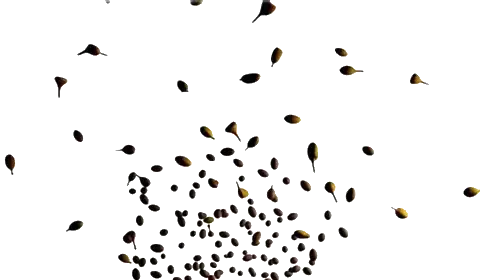
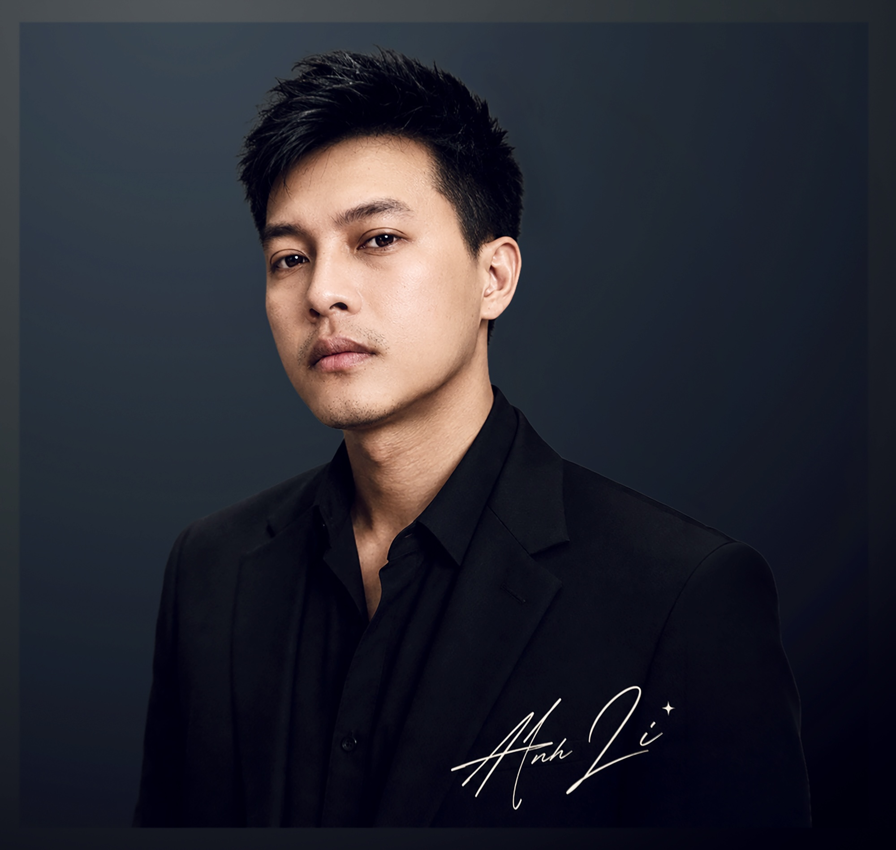
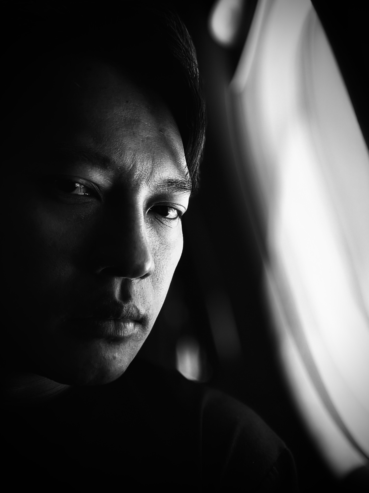
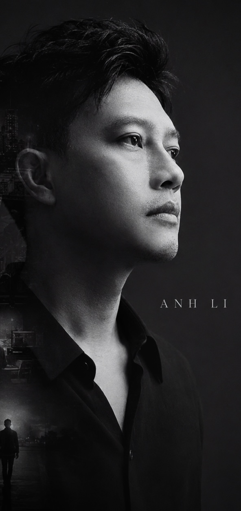
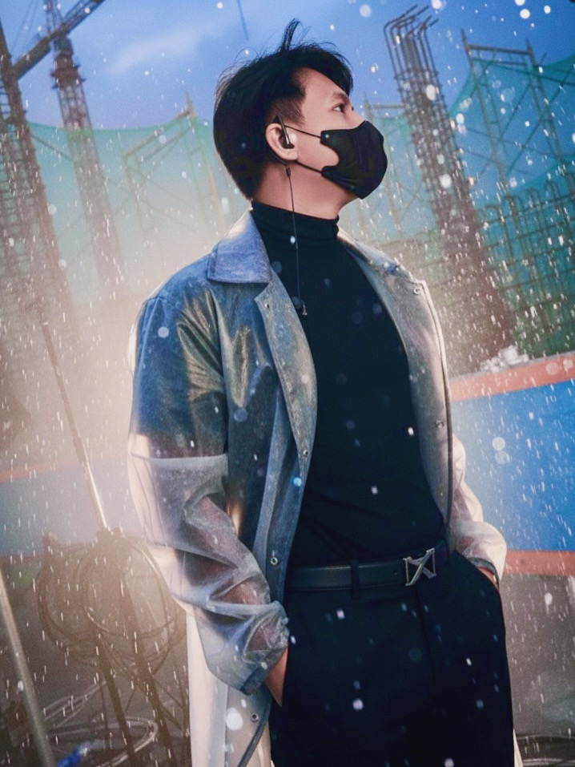

Hít một hơi thật chậm…
Khi bạn sẵn sàng, hãy chạm vào túi hạt.
Gió đã chọn xong.
À… ba hạt của bạn là…

“Xin chào đằng ấy ơi, mình là Anh Li — cảm ơn bạn đã ghé thăm,
ngẫu nhiên hay từ một lời mời nè?
Giới thiệu với đằng ấy, đây là khu vườn của những điều mình đã làm,
đã nghe, và vẫn đang trở thành. Cứ tự nhiên trải nghiệm nha.”
Đợt này khu vườn đang mở bằng Một Tần Số Khác — album nổi bật nằm trong jewel case lớn, cùng những lát nhạc khác trôi giữa đồng bồ công anh.
Mình muốn mở đầu bằng một lời mời ở lại,
còn thành tích thì để kể sau cũng được.
Bạn có thể đi qua một khung hình, dừng ở một bài hát, rồi lần theo những căn phòng nghề nghiệp đã làm nên con người đứng phía sau chúng.
Mỗi ngày, mình đều có sẵn một thông điệp chờ bạn — khám phá nhé.
Hít một hơi thật chậm…
Khi bạn sẵn sàng, hãy chạm vào túi hạt.
Gió đã chọn xong.
À… ba hạt của bạn là…




“ Mình thích dựng nên khoảnh khắc. Những điều người ta mang về nhà, lâu hơn một sự kiện.
Mình là Anh Li — một người đi từ không gian đến sân khấu, từ brief đến cảm xúc, rồi mang tất cả những lớp nghề ấy vào âm nhạc. Sài Gòn là nơi mình sống; sự tò mò là nơi mình làm nghề.
Dựng cảm xúc thành câu chuyện, không gian và nhịp diễn.
Viết, sản xuất và xây thế giới âm nhạc độc lập.
Giữ ý tưởng đi trọn đường từ bản phác đến khoảnh khắc thật.
Dùng công nghệ như một chất liệu, không thay thế chủ thể sáng tạo.
Phần đầu là lời chào và những điều có thể nhìn thấy.
Anh Li viết và giữ cảm xúc; D'Li là phần giọng ảo được sinh ra để hát những điều mình chưa hát được.
AI không thay thế trái tim.
Nó chỉ là một nhạc cụ khác — chủ thể sáng tạo vẫn là con người.
Anh Li viết, chọn hướng, sản xuất và chịu trách nhiệm cho từng tác phẩm. Công nghệ tham gia vào âm thanh; quyết định thẩm mỹ và cảm xúc vẫn thuộc về người nghệ sĩ.
Một phòng thử thị giác đang tiếp tục lớn lên — từ thiết kế, motion đến những khoảnh khắc được nhặt lại trong quá trình làm nghề.
Mười sáu năm trước, Anh Li bước vào nghề từ Thiết kế Nội thất, học cách một đường nét có thể thay đổi cảm giác của con người trong không gian. Từ đó, hành trình không đi theo đường thẳng: account dạy cách lắng nghe, sáng tạo dạy cách đặt câu hỏi, sân khấu dạy về nhịp và khoảnh khắc, còn sản xuất dạy cách đưa một ý tưởng đi qua giới hạn mà vẫn giữ được linh hồn.
Dấu mốc không nằm ở một chức danh. Nó nằm ở khoảnh khắc mình đủ nhiều lớp nghề để dẫn một ý tưởng từ trang giấy đến ký ức của người xem.
Bên ngoài, một người làm nghề lặng lẽ. Bên trong, nhiều thế giới vẫn đang cùng lúc sáng đèn.Giảng viên tại AIM Academy · Event & Activation Management →
Nếu phần trước là những căn phòng đã tạo nên người làm nghề, đây là lúc các căn phòng ấy bắt đầu chuyển động — qua sân khấu, âm nhạc, thương hiệu và những khoảnh khắc chỉ tồn tại một lần.
Đang tải video…
Có một show cần dựng, một bài cần viết, hay chỉ muốn nói chuyện nghề — cứ nhắn.
images/momo-qr.jpg